Currently working in the IT Department at Mousumi Industries Limited, responsible for maintaining reliable network connectivity, monitoring data center operations, and managing IT infrastructure. I believe staying updated with evolving technologies and tackling challenging tasks is essential for continuous skill development and meaningful contributions to the company’s success.
I was born and raised in Dhaka, and now I'm a Junior Officer at Mousumi Industries Limited. In this role, I oversee reliable network connectivity, monitor data center operations, and manage IT infrastructure across the organization. Working in an industrial environment has strengthened my practical understanding of large-scale IT systems and inspired me to stay ahead of emerging technologies while constantly expanding my expertise.
I've done my B.Sc. in Information Technology at the University of Information Technology & Sciences (UITS), where I developed a strong foundation in Computer Networking and System Administration. Alongside my degree, I have completed industry-recognized certifications that enhanced my understanding of network protocols, connectivity troubleshooting, wireless configurations, cybersecurity, and computer hardware.
Every day, I make an effort to educate myself more about current events and the technological world. I love to solve problems and learn new things, and nothing gets me more excited than thinking of innovative ideas and making them really happen so that people can't bear to be without them.
What I'm really good at?
I have a strength for learning and applying knowledge, especially in IT fields like networking and cybersecurity. I'm naturally curious and always try to make complex ideas clear and easy to understand. I enjoy analyzing situations, comparing options, and finding the best solutions, which helps me stay focused on both my current work and long-term goals. At the same time, I reflect a lot on myself, which gives me the awareness to balance technical skills with emotional understanding. Altogether, I believe these qualities make me strong in problem-solving, communication, and planning for the future.
What is my career goal?
My career goal is to build a strong foundation in the field of networking and gradually move into more advanced roles within the sector. Over time, I want to develop the expertise and leadership skills needed to take on greater responsibility in managing IT infrastructure, ideally in an industry or multinational company, where I can ensure secure and reliable IT operations. I see this path as a way to combine my technical knowledge, problem-solving ability, and vision for creating safer digital environments.
What are my hobbies?
I love working on new projects that involve the latest technologies, and I find writing code both fun and creative. Outside of coding, collecting various gadgets and perfumes is another hobby that excites me. I love watching movies, which gives me entertainment after a busy day. Also, I enjoy reading books about technology, personal development, and spirituality, which keeps me up-to-date, helps me grow intellectually, and allows me to find balance in my life. And of course, traveling is one of my favorite things; it opens me up to new experiences, fresh perspectives, and the chance to explore different cultures.
What is my research topic?
My academic research titled on “Drinking Water Quality Prediction Based on Machine Learning Algorithms,” addressing the critical public health challenge of water contamination in developing countries such as Bangladesh. Alongside this, I am actively involved in research on “Reducing Unwanted Vehicle Horns Using V2V Wireless Communication for Safer Commuting,” where I explore technology-driven approaches to improve urban mobility and safety. Through these initiatives, I seek to deepen my understanding, produce meaningful contributions to the field, and translate theoretical knowledge into practical. It's a topic that challenges me, excites me, and constantly pushes me to learn more.
Exposure to large-scale industrial operations has strengthened my ability to apply IT solutions in dynamic environments and reinforced my commitment to continuous growth and innovation.
Research and validate trending and emerging technology news through credible digital sources and cross-platform verification.
Design visually engaging graphical content and craft concise, insight-driven summaries for featured tech news coverage.
Managed and published posts/reels to deliver the latest technology and cybersecurity updates to audiences interested in staying informed about the evolving digital world.
Monitor audience engagement analytics and develop data-driven content strategies to maximize reach, visibility, and user interaction.
Evaluate project performance and measure return on investment (ROI) through analytical reporting and performance assessment.
Directly sourced branded, high-demand watches from importers and vendors.
Developed pricing strategies, marketing content, and promotional offers to drive online engagement.
Conducted market research and competitor analysis to identify growth opportunities and trends.
Assessing the financial feasibility and return on investment (ROI) of projects.
APR0120182018 - 2021
Here's What I'm Doing
I shape my activities in ways that create value not only in my own life but also in the lives of others. So that people become responsible, good citizens of the digital world.
Platform & Research
I work with network servers and cloud services, and I conduct research with a focus on compatibility and real-world solutions. I am open to collaborating on projects related to networking and research.
Teaching & Mentorship
With over six years' experience as a private tutor beyond my professional job, I guide my students through the IT landscape, creating a space where curiosity and learning go hand in hand.
Problem Solving
Selected as Campus Ambassador of the Month by Think Bright, recognizing my dedication to fostering connections and promoting initiatives on campus for turning ideas into action and creating meaningful experiences.
Development
Writing code is a hobby of mine, as it allows me to stay updated with the latest technology. I'd love the opportunity to collaborate with you, making your ideas real in your next web application.
Education
The foundation for knowledge, skills, attitudes, beliefs, and habits is education. With this belief, I completed my B.Sc. in Engineering.
Bachelor of Science (B.Sc.) in Information Technology
Major FocusComputer Networks, Data Communication, Cyber Security & Machine Learning
Campus LocationBaridhara, Dhaka, Bangladesh
I graduated with a Bachelor of Science in Engineering from UITS. For me, university life was more than just lectures and exams; it was a memorable chapter that shaped who I am today through academics, extracurricular activities, and faculty mentorship.
ProgramScience Stream (Physics, Mathematics, and ICT)
Campus LocationDhaka, Bangladesh
I completed a two-year science program where subjects like physics, math, and ICT quickly became favorites. It was during this period that I truly began to understand how science connects to the real world, inspiring my ongoing passion for technology.
GroupScience Group (Physics, Chemistry, and Mathematics)
Campus LocationMotijheel, Dhaka (Central Govt.)
Studied for five years in the science group. My school life was full of memorable moments on the playground, school events, and building long-lasting friendships while cultivating an analytical mindset.
Where my learning journey began. Beyond reading and writing, I learned discipline, respect, and the importance of staying curious, slowly shaping the mindset that drives my education today.
Technical Skills
Keeping up with technology is key to professional advancement. So, I dedicated myself to learning many technologies. Here are my programming skills.
HTML5
Advanced
JAVASCRIPT
Intermediate
CSS
Advanced
C++
Intermediate
PYTHON
Intermediate
JAVA
Basic
Other Skills
To live in the real world, one needs basic knowledge as well as academic skills. I think I have the following abilities.
Professional
COMMUNICATION
Intermediate
ORGANIZATION
Advanced
LEARNING
Intermediate
PLANNING
Intermediate
PROGRAMMING
Intermediate
PROBLEM SOLVING
Pre-Intermediate
CREATIVE WRITING
Pre-Intermediate
MARKETING
Language Proficiency
Outside of my own tongue, I enjoy learning other languages. Here are some languages that I know; check them out!
ENGLISH
B2 Level Proficient
BENGALI
Native
GERMAN (DEUTSCH)
Limited Working Proficiency
HINDI
Professional Working Proficiency
Core Competencies
These are my professional competencies across networking, tools, and key concepts in IT infrastructure management.
Hands-on experience with Cisco Packet Tracer, configuring routers and switches, IPv4/IPv6 subnetting, initial device security, connectivity testing, and systematic network troubleshooting.
Network Systems
Cisco Networking Academy
Networking Basics
Practical competencies in network architectures, OSI and TCP/IP models, data transmission, cabling standards, transport layer operations, and building home wireless networks with Packet Tracer.
Computer Hardware
Cisco Networking Academy
Computer Hardware Basics
Skills in computer architecture, hardware diagnostics, installing and upgrading motherboard components, storage drives, and performing systematic device maintenance and troubleshooting procedures.
Security Defense
Cisco Networking Academy
Introduction to Cybersecurity
Essential skills in identifying vulnerabilities, defending against cyber attacks, understanding malware taxonomy, privacy implications, and enterprise security defense frameworks.
IoT & Systems
Cisco Networking Academy
Introduction to IoT
Understanding IoT topologies, sensor telemetry, edge connectivity, automation workflows, and digital transformation architectures linking hardware devices to software services.
Professional English
Cisco Networking Academy
English for IT 1
Upper-intermediate (CEFR B2) English proficiency tailored for technology environments, software engineering communication, technical support, and cross-functional teams.
Advanced Technical
Cisco Networking Academy
English for IT 2
Advanced technical communication skills for engineering documentation, system design proposals, client presentations, and collaborative software deliverables.
Cyber Defense
CertiProf
Cybersecurity Awareness Learner
Demonstrated initiative in enterprise cyber hygiene, phishing and social engineering resistance, endpoint safeguarding, and threat-aware operational protocols.
Infrastructure
OPSWAT Academy
Introduction to Critical Infrastructure Protection (ICIP)
Safeguarding vital industrial and operating environments, critical network segmentation, operational technology (OT) defense principles, and OPSWAT security framework navigation.
For my final year project, I completed a thesis on predicting drinking water quality in Bangladesh using machine learning, in collaboration with my two friends.
Drinking Water Quality Prediction Based on Machine Learning Algorithms
In developing nations like Bangladesh, contaminated sources of drinking water are a serious public health concern. It explores how machine learning can predict water potability with greater accuracy and speed than traditional methods. Using a dataset of nine key water quality parameters, six models were tested: Logistic Regression, KNN, Decision Tree, Random Forest, SVM, and XGBoost. Among them, the Support Vector Machine Classifier achieved the highest accuracy (87.15%) after class imbalance adjustment and K-fold validation, demonstrating its effectiveness in identifying safe and unsafe water.
Why did Elon Musk turn Twitter into X? Get a quick breakdown of the vision behind the rebrand and how it could evolve into an all-in-one “everything app.”
This article shows how digital twins can predict traffic issues, improve safety, and support smarter transportation planning, reducing congestion and improving efficiency.
An article describes how 2023 became a standout year for space exploration, marked by explosive rocket tests, major achievements like Chandrayaan-3, and rapid innovation.
Discover how to align your strengths and skills with a career path that suits you. Making informed choices begins with self-assessment and market demand.
As a proud ambassador of Think Bright, I had the privilege of promoting its mission to diverse audiences and collaborating with like-minded individuals and organizations. This experience strengthened my belief in the power of education to inspire growth and innovation. I was honored to be selected as the Campus Ambassador of the Month for my contributions to advancing educational and creative initiatives.
Over the past few years, I have traveled across several districts across Bangladesh, enriching my perspective and shaping my worldview.
My Travel Experience
19 Districts
I've been to 19 districts in Bangladesh, and each trip has added a new story to my life. My first adventure began in Sylhet in 2016, right after my SSC exam; a trip with friends that still feels vividly alive. In 2025, I had a sudden yet thrilling trip to Chandpur with friends that turned into an unforgettable experience. And most recently, I went to Sirajganj with my colleagues. It made my travel experiences even more fun and friendlier together. Traveling, to me, is a way to see life through new perspectives, embrace cultures, and rediscover myself with every journey.
A collection of photos that capture memories from my life. Each picture tells a story of exploring the world, having adventures, and seeing its beauty.
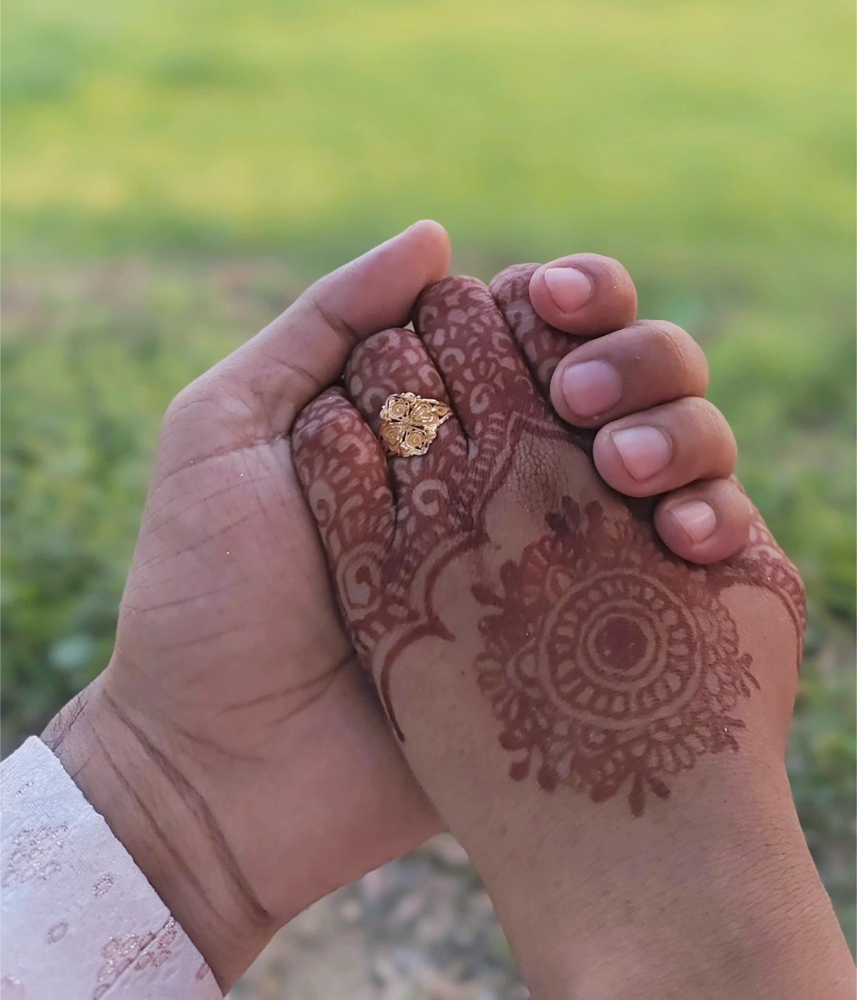
I got my forever valentine on the day of Valentine's.
February, 2026
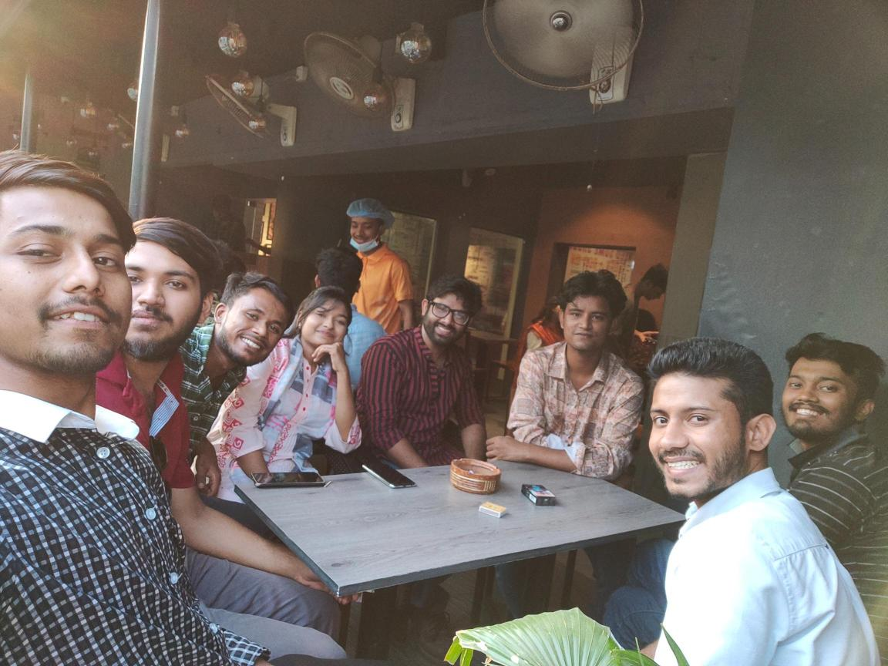
Last hangout, last picture of us.
November, 2023
Sun, sea, hammock… pure peace in a single moment.
October, 2021
My wedding reception, made even more special by these colleagues. Thank you for joining!
You are the blessing I always prayed for. Alhamdulillah, Allah blessed me with an amazing life partner like you.
June, 2026
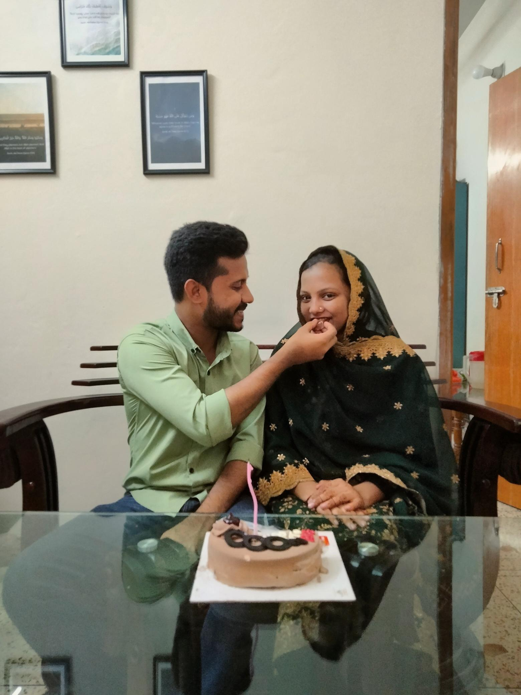
Wedding memories still fresh, and then came her birthday. My first time celebrating it with the love of my life.
June, 2026
You wrote my name on your hand, but I know it's written in your heart.
June, 2026
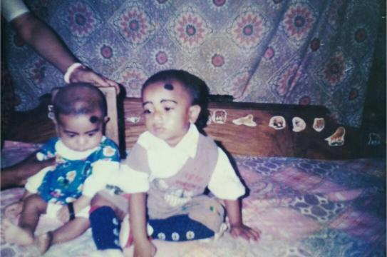
More than a cousin!
Since Childhood
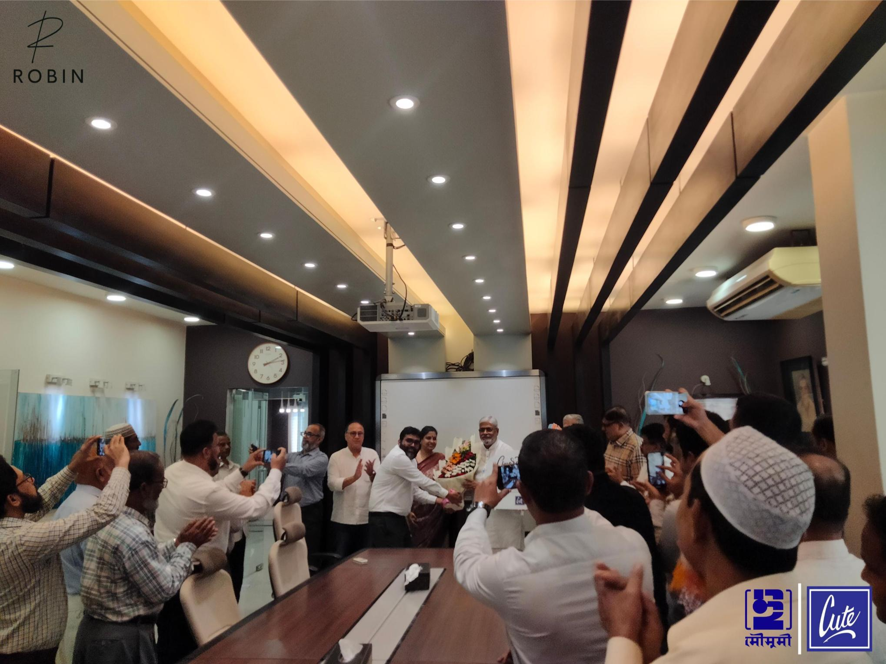
A big win for our chairman, sir, a proud day for all of us.
November, 2025
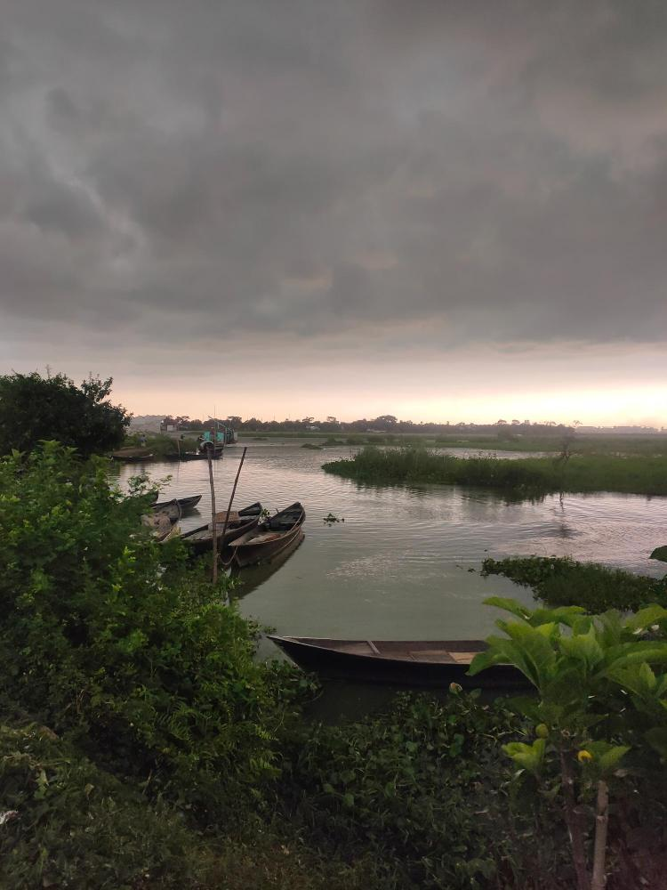
Not my home, but full of memories; the village scenes I always dreamed of.
September, 2024
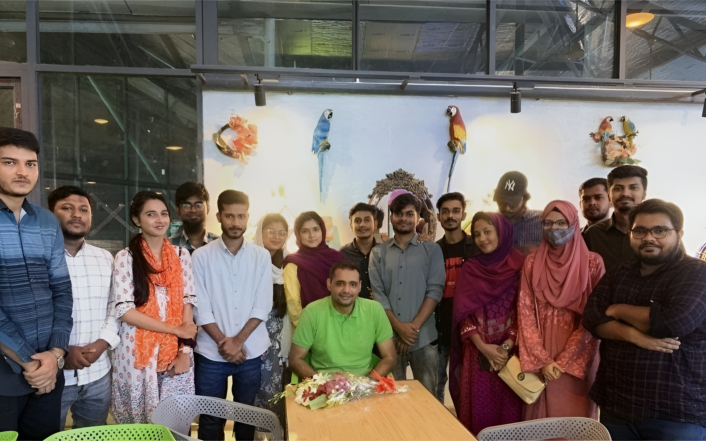
A Moment with My Favorite Teacher, Shayokh Sir!
October, 2023
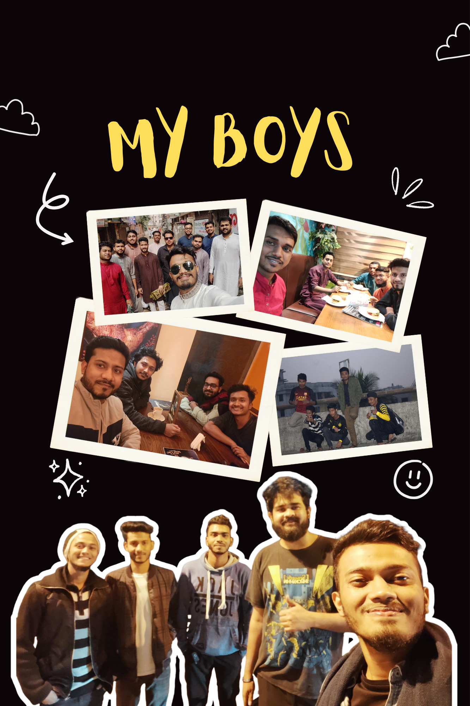
So many days, so many memories.
Since Teenage
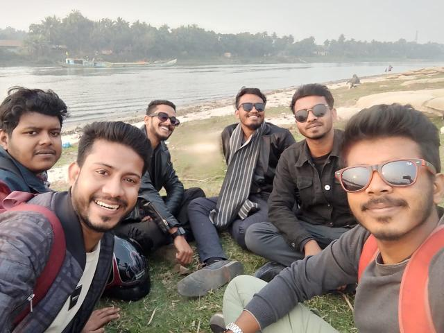
Sudden plans, endless laughs.
January, 2025
Right before the adrenaline hit.
October, 2021
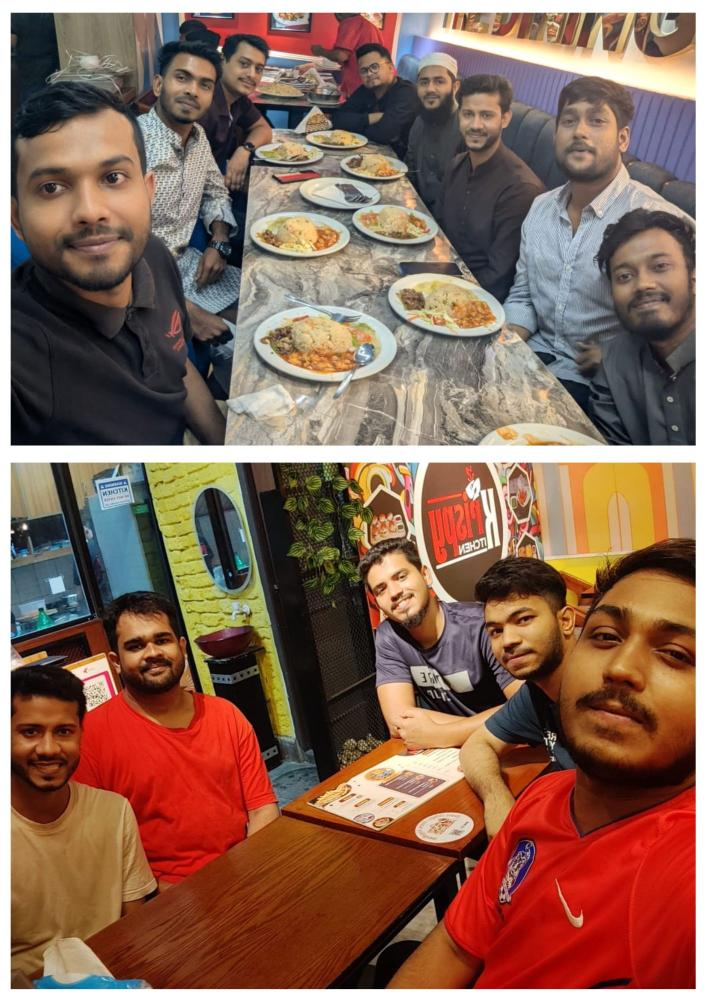
Celebrated the first step of my journey with my boys.
July, 2025
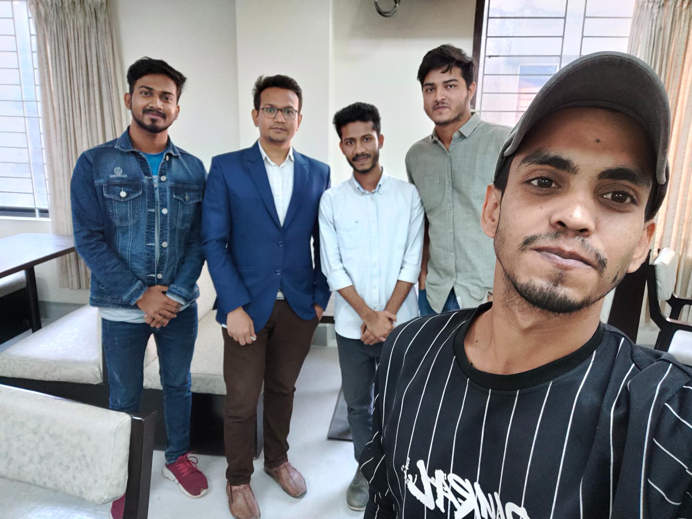
We met our favorite teacher before he began his new journey at UAP.
December, 2022
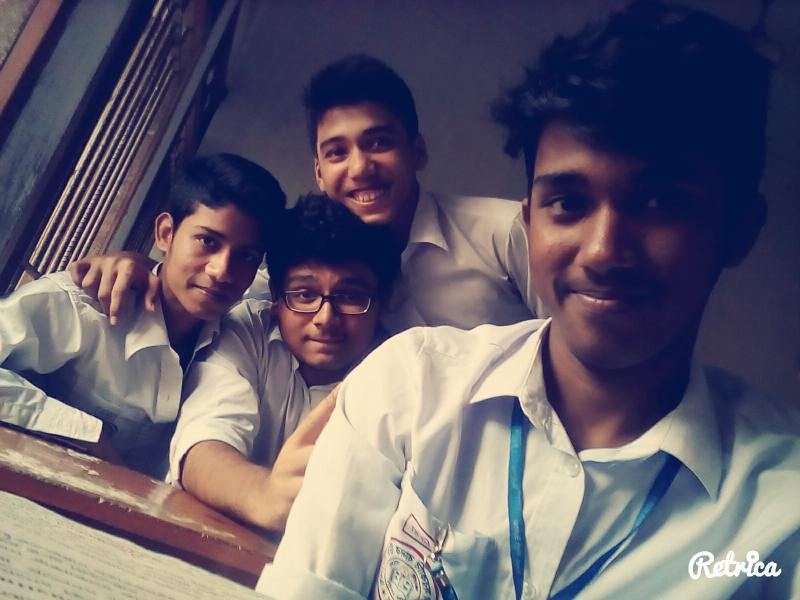
Last class, last memories. Old-school vibes.
January, 2016
Witnessed a historic moment that day.
August, 2024
CLIENT EXPERIENCES
What My Colleagues Say
Priya Raghunathan
Studio Director, Northlight
01 / 05
About Myself
I'm someone who believes in clear, efficient communication and takes a disciplined approach to every task I take on. I value patience, which helps me stay focused on long-term goals and approach challenges with a proactive and positive mindset and adapt smoothly to different situations while maintaining consistency. I can work independently when needed but excel in collaborative settings, exchanging ideas and refining solutions with others.
I'm someone who believes in clear, efficient communication and takes a disciplined approach to every task I take on. I value patience, which helps me stay focused on long-term
goals and approach challenges with a proactive and positive mindset and adapt smoothly to different situations while maintaining consistency. I can work independently when needed but excel in collaborative settings, exchanging ideas and refining solutions with others.
Let's Work Together
I'm always interested in hearing about new opportunities and exciting projects. Whether you need network infrastructure setup, cybersecurity assessment, or technical support, let's discuss how I can help bring your vision to life.
"Every one of us is, in the cosmic perspective, precious. If a human disagrees with you, let him live. In a hundred billion galaxies, you will not find another."